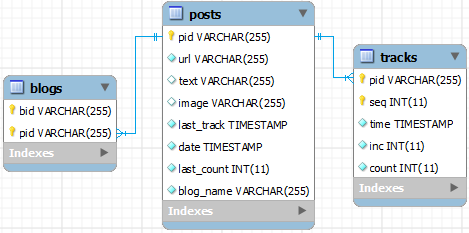
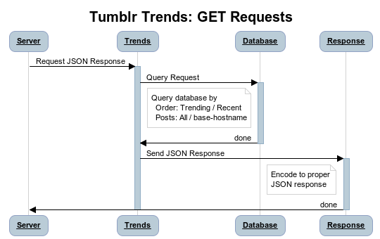
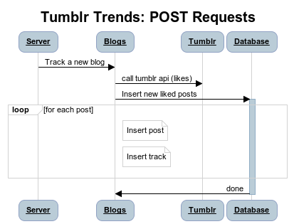
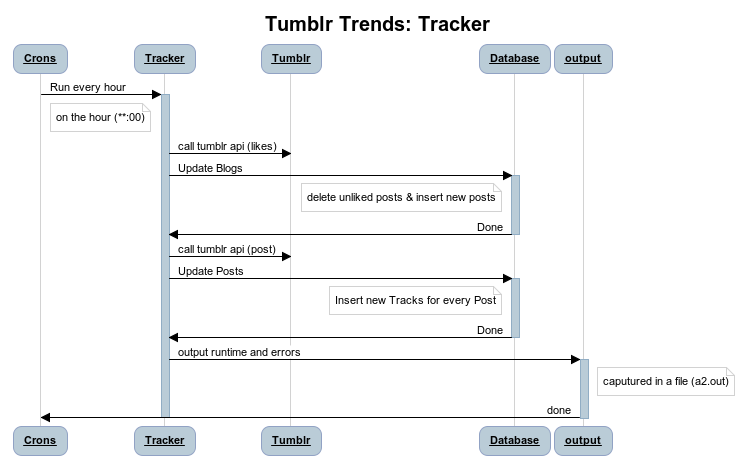

Assignment 2: Trends in Tumblr
Port: 31040
CDF environement: redwolf
| Student |
CDF Username |
Student Number |
| Malithi Gamage |
c2gamage |
998200931 |
| Pirave Eahalaivan |
c2eahala |
998152136 |
| Karthig Balendran |
c2balend |
999419384 |

CREATE TABLE IF NOT EXISTS posts (
pid VARCHAR(255) NOT NULL,
url VARCHAR(255) NOT NULL,
text VARCHAR(255),
image VARCHAR(255),
last_track TIMESTAMP DEFAULT CURRENT_TIMESTAMP ON UPDATE CURRENT_TIMESTAMP,
date TIMESTAMP NOT NULL,
last_count INT NOT NULL,
blog_name VARCHAR(255) NOT NULL,
PRIMARY KEY (pid)
)
CREATE TABLE IF NOT EXISTS blogs (
bid VARCHAR(255) NOT NULL,
pid VARCHAR(255) NOT NULL,
PRIMARY KEY (bid,pid),
FOREIGN KEY (pid) REFERENCES posts(pid)
)
CREATE TABLE IF NOT EXISTS tracks (
pid VARCHAR(255) NOT NULL,
seq INT NOT NULL AUTO_INCREMENT,
time TIMESTAMP DEFAULT CURRENT_TIMESTAMP,
inc INT NOT NULL,
count INT NOT NULL,
PRIMARY KEY (pid,seq),
FOREIGN KEY (pid) REFERENCES posts(pid) ON DELETE CASCADE
)
We make two API calls to Tumblr, likes and posts.
- index.php main script which creates an instance of server to serve the client request (in server.php)
- /api
- server.php essentially a router which directs the requests to the correct handlers (new blog or get trends)
- blogs.php tracks a new blog when a POST request is made
- trends.php returns the JSON for the GET request
- response.php helper to respond with the JSON
- /lib
- database.php layer between MySQL and the server which initializes connections and makes queries
- queires.php holds common Query strings (for ease of access)
- tumblr.php makes all API calls to tumblr and extracts relevant info
- /tracker
- tracker.php hourly script to be run



- If the limit is not specified, the default value is set to 10
- If the order is not specified, the default value is set to "trending"
- If the order is neither "trending" nor "recent" 404 is sent
- If the blog requested is not valid 404 is sent
- If the title of a post is not available the slug is used
- If an image is not available we default to this
- Crons is run every hour on the hour: 0 * * * * php -f tracker.php
{kind=link}